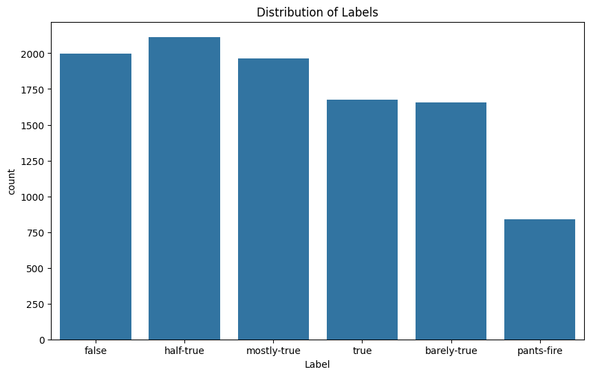
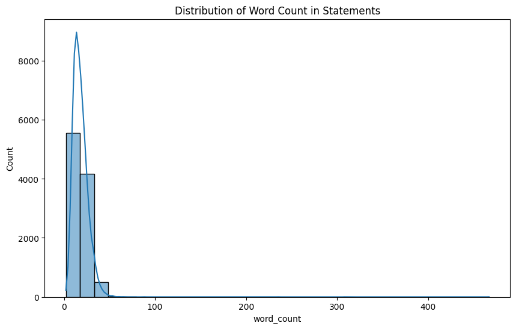

import pandas as pd
import matplotlib.pyplot as plt
import seaborn as sns
# Load the dataset
file_path = '../../data/Clean_Data/liar_dataset/train.csv'
liar_df = pd.read_csv(file_path)
# Display the first few rows of the dataset
print(liar_df.head())
# Display basic information about the dataset
print(liar_df.info())
# Display summary statistics of the dataset
print(liar_df.describe())
# Check for missing values
print(liar_df.isnull().sum())
# Plot the distribution of the target variable
plt.figure(figsize=(10, 6))
sns.countplot(x='Label', data=liar_df)
plt.title('Distribution of Labels')
plt.show()
# Plot the distribution of the word count in statements
liar_df['word_count'] = liar_df['Statement'].apply(lambda x: len(str(x).split()))
plt.figure(figsize=(10, 6))
sns.histplot(liar_df['word_count'], bins=30, kde=True)
plt.title('Distribution of Word Count in Statements')
plt.show() ID Label Statement \
0 2635.json false Says the Annies List political group supports ...
1 10540.json half-true When did the decline of coal start? It started...
2 324.json mostly-true Hillary Clinton agrees with John McCain "by vo...
3 1123.json false Health care reform legislation is likely to ma...
4 9028.json half-true The economic turnaround started at the end of ...
Subjects Speaker Job_Title \
0 abortion dwayne-bohac State representative
1 energy,history,job-accomplishments scott-surovell State delegate
2 foreign-policy barack-obama President
3 health-care blog-posting NaN
4 economy,jobs charlie-crist NaN
State_Info Party Barely_True_Count False_Count Half_True_Count \
0 Texas republican 0.0 1.0 0.0
1 Virginia democrat 0.0 0.0 1.0
2 Illinois democrat 70.0 71.0 160.0
3 NaN none 7.0 19.0 3.0
4 Florida democrat 15.0 9.0 20.0
Mostly_True_Count Pants_On_Fire_Count Context
0 0.0 0.0 a mailer
1 1.0 0.0 a floor speech.
2 163.0 9.0 Denver
3 5.0 44.0 a news release
4 19.0 2.0 an interview on CNN
<class 'pandas.core.frame.DataFrame'>
RangeIndex: 10240 entries, 0 to 10239
Data columns (total 14 columns):
# Column Non-Null Count Dtype
--- ------ -------------- -----
0 ID 10240 non-null object
1 Label 10240 non-null object
2 Statement 10240 non-null object
3 Subjects 10238 non-null object
4 Speaker 10238 non-null object
5 Job_Title 7342 non-null object
6 State_Info 8030 non-null object
7 Party 10238 non-null object
8 Barely_True_Count 10238 non-null float64
9 False_Count 10238 non-null float64
10 Half_True_Count 10238 non-null float64
11 Mostly_True_Count 10238 non-null float64
12 Pants_On_Fire_Count 10238 non-null float64
13 Context 10138 non-null object
dtypes: float64(5), object(9)
memory usage: 1.1+ MB
None
Barely_True_Count False_Count Half_True_Count Mostly_True_Count \
count 10238.000000 10238.000000 10238.000000 10238.000000
mean 11.533210 13.286482 17.133718 16.434265
std 18.973764 24.112936 35.846511 36.151688
min 0.000000 0.000000 0.000000 0.000000
25% 0.000000 0.000000 0.000000 0.000000
50% 2.000000 2.000000 3.000000 3.000000
75% 12.000000 12.000000 13.000000 11.000000
max 70.000000 114.000000 160.000000 163.000000
Pants_On_Fire_Count
count 10238.000000
mean 6.201407
std 16.128927
min 0.000000
25% 0.000000
50% 1.000000
75% 5.000000
max 105.000000
ID 0
Label 0
Statement 0
Subjects 2
Speaker 2
Job_Title 2898
State_Info 2210
Party 2
Barely_True_Count 2
False_Count 2
Half_True_Count 2
Mostly_True_Count 2
Pants_On_Fire_Count 2
Context 102
dtype: int64
